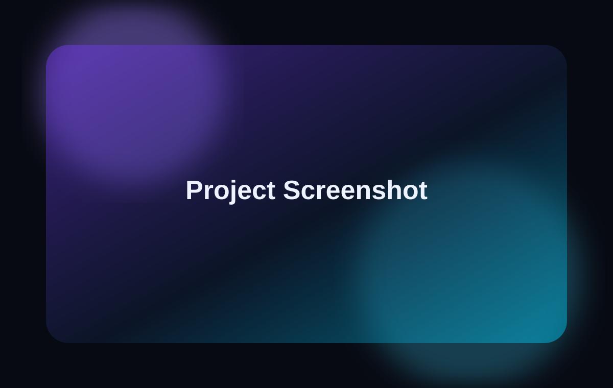

Overview
This page is for the current rat co-op game concept, including a sewer city lobby, pipe-based level entry, and cooperative multiplayer systems.
Unity · Co-op · In Development
A developing co-op rat game concept with a sewer city lobby and multiplayer level entry systems.
← Back to Work
This page is for the current rat co-op game concept, including a sewer city lobby, pipe-based level entry, and cooperative multiplayer systems.
I am designing the lobby structure, player interaction points, level entry flow, and readiness systems.
The challenge is keeping the scope controlled while still making the hub feel memorable and useful.
I am learning how multiplayer preparation spaces need to support both gameplay and player communication.
Add screenshots from Unity, explain the lobby flow, and document the scene changing system.